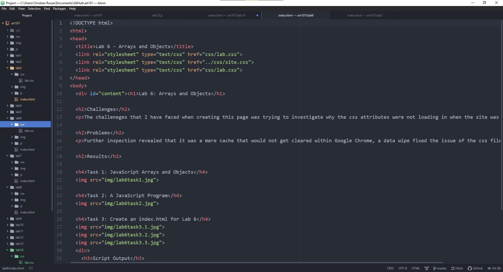

Lab 14: Debugging Tools and Strategies
Challenge
The challenge of this lab is to review preview labs and essentially clean up the files to eliminate unnecessary elements or errors that may have occurred.
Problem
When I approach any lab I am fairly thorough at making sure that everything functions the way the lab asks for as far as I can understand without having any errors in the console. Typically, the console errors only happen when there is an image that I have referenced that hasn't been imported yet or a file that hasn't been created. In most cases, it's just a matter of relabelling or deleting references that were not needed in the final product.
Results/Assignment Prompt
The majority of changes were mere reconstructions and eliminating redundancies.
Task 1: Create an HTML file
Task 2: Debug Old Labs
Below is an image from the HTML file of my homepage (Lab 0?), there were no errors in the code, however, I took mental notes at the beginning of the quarter to delete a CSS reference that was unnecessary and rename the current helloworld.css to be more accurate, this is after the change, however. A cleanup of files.
Below is an image of the index of Lab 3. Again, I rid of the redundant CSS and also changed some of the labelings.
Below is an image of Lab 6 demonstrating an egregious example of redundant CSS files. These have been removed and the site still functions as intended.
Task 3: Resubmit
Resubmitted